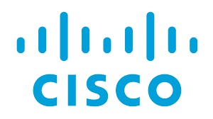

Mon CV
96 Chemin du Val Fleury
"Le Syrina Bat. C"
06800 Cagnes sur Mer
Etudiant Développeur
Remiseur Dégareur
Avril 2012 à Juin 2022
SNCF Technicentre PACA
Conduite d'engins automoteurs et locomotives sur et hors du réseau RFN
Réalisations d'essais des organes de sécurité nécessaires à la circulation d'un engin moteur
Lieu : Marseille Blancarde, Cannes la Bocca
Technicien de Maintenance des Systèmes Energetiques et Climatiques
Septembre 2007 à Fevrier 2012
COFELY GDF Suez
Dépannage multitechnique : Electricité, plomberie, chauffage, climatisation, traitement d’air
Divers sites : Texas Instruments, Hewlett Packard, CADAM, Hôpital de la Fontonne et Acropolis
Septembre 2023 à Aujourd'hui
Formations aux métiers du numérique
La Plateforme Cannes
1 Chemin de l'école, 06150 Cannes
Baccalauréat Professionel TMSEC
Septembre 2007 à Juin 2009
Technicien de Maintenance des Systèmes Energetiques et Climatiques
Lycée Professionel Régional du Batiment Vaudan
17 Bd Pierre Sola 06300 Nice
Linux
Bash
Html/css
Cisco